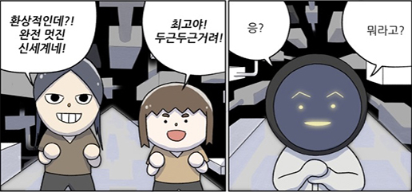
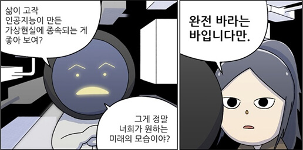
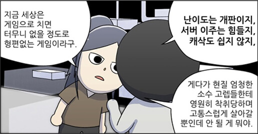

지난 5월 서울 예술의 전당 콘서트홀에선 NCSOFT의 게임 음악이 울려 퍼졌다. 그것도 오케스트라 연주로. 해외 오케스트라가 게임 음악을 연주한 경우는 많지만, 국내 오케스트라의 연주는 처음이었다. 특히, 이날 열린 <게임 속 오케스트라>는 게임 회사의 협찬이나 요청이 아닌, 오케스트라(코리안심포니)가 직접 기획한 연주회였다. 청중은 게임 배경음악(BGM)이나 타이틀 곡을 오케스트라 연주로 듣는 동시에 해당 게임의 영상도 함께 볼 수 있었다. <테트리스> 같은 추억의 고전 게임 음악에서부터, 한국 대표의 온라인게임들을 제작한 NCSOFT의 <리니지>, <아이온>, <블레이드&소울> 등 주요 게임 음악들이 오케스트라 연주로 재현됐다. 국내에서 보기 드문 시도를 이끈 이병욱 지휘자를 만났다.
STAGE1
FUN & JOY
오케스트라와 게임이 만나다
예술과 기술 사이, 즐거움이 커지는 곳
게임은 종합예술이다. 스토리ㆍ영상ㆍ음악이라는 여러 장르가 게임에서 어우러진다. 그 예술을 구현하는 것은 캐릭터 디자인ㆍ프로그램 개발ㆍ서버 구축 등 탄탄한 기술이다. 예술과 기술이 만난 융합 콘텐트인 게임은 대한민국의 미래 먹거리인 동시에 4차 산업혁명에 최적화된 산업군으로 꼽힌다. 이는 숫자에서도 나타난다. 한국 게임의 수출액은 2015년 30억 달러를 넘어섰다. K팝의 11배, 영화의 132배나 된다. 융합의 DNA가 강한 게임은 최근 여러 예술 장르와 콜라보레이션(협업)에도 적극적이다. 게임 아트 작품 전시회뿐만 아니라 뮤지컬, 영화, 대중음악, 피규어(인형) 제작 등 다양한 분야와 접목을 시도하고 있다. NCSOFT는 MMORPG(Massive Multiplayer Online Role Playing Game, 대규모 다중접속자 온라인 역할수행 게임)인 <블레이드&소울>의 스토리와 캐릭터를 테마로 한 2015년 뮤지컬 <묵화마녀 진서연>(감독 남경주)을 선보이기도 했다. 게임을 잘 모르는 대중도 문화예술 콘텐트로서 게임의 스토리를 즐길 수 있도록 게임을 재해석한 것이다. 또 게임 음악을 분야에서도 국내외 뮤지션들과 협업해 퀄리티를 높였다. 즐거움의 범위를 게임 밖의 영역으로 확장한 것. 이렇게 활발히 융합을 시도하는 게임, 그렇다면 게임도 ‘문화예술’로 대접받을 수 있을까. 국내에서 게임은 아직 법적으로 문화예술에 속하지 않는다. 반면, 미국·일본 등에서는 21세기 문화예술 패러다임을 주도할 새로운 예술장르로서 게임을 달리 보기 시작했다. 미국은 2011년 연방대법원 판결을 통해 게임을 소설이나 영화, 연극과 같은 예술의 한 장르로 인정했다. 일본도 자국의 ‘문화예술진흥기본법’에서 게임을 문화예술로 명시해 국가적으로 지원하고 있다. 국내에서도 3년 전부터 게임의 예술성을 인정하자는 목소리가 나오고 있다. 19대 국회에 이어 20대 국회에서 게임을 영화·음악·만화처럼 문화예술의 범주에 포함시키자는 법안이 발의돼 계류 중이다. 여러 사회적 이슈에서 자주 거론된 게임, 이번엔 주류 문화예술로 인정받을 수 있을까.
해외에서 한국영화보다 더 환영받는 한국게임
interview
interview
interview
interview
NCSOFT 게임
<아이온> OST
오픈베타 영상∙2008년
게임 웹툰, 사회의 룰을 고발하다



interview
‘가족과 함께 즐기는 야구’, ‘즐거운 야구문화’를 위해 여름마다 창원 홈 구장을 하룻밤 캠핑장으로 오픈하고, 창원 지역 주민들에겐 홈 경기가 없는 평일에 스카이박스를 회의실·스터디룸으로 무료 개방했다. 고양시에 연고를 둔 퓨처스리그 ‘고양 다이노스’는 ‘우리동네 야구단’이라 개념을 도입해 주민들과 함께 하는 지역 야구단의 가능성을 입증했다. 공짜 경기가 당연시되던 퓨처스리그에서 3년 전 최초로 유료 입장권을 팔기 시작해 2017년 5월 유료 관중 2만명 돌파 기록을 세웠다. 그에서 3년 전 최초로 유료 입장권을 팔기 시작해 2017년 5월 유료관중 2만명 돌파 기록을 세웠다.
야구도 벤처다 - 진격의 공룡, NC 다이노스
연고지 - 경상남도 창원시
홈구장 - 창원마산종합운동장 야구장
창단 - 2011년 2월 8일 [KBO 9번째 구단]
모기업 - 엔씨소프트
구단주 - 김택진
대표이사 - 이태일
감독 - 김경문
마스코트 - 공룡 (단디 & 쎄리)
NC 다이노스 최초의 기록들
KBO 첫 경기
2013년 4월 2일
경남 마산 홈개막전,
NC VS 롯데
NC 최초의
골든글러브
2014년
외야수 나성범
NC 최초의 신인왕
2013년
투수 이재학
KBO 최초의
40홈런-40도루
2015년
외야수 에릭 테임즈
첫 한국시리즈
진출
2016년
정규시즌 진입
4년만
한국프로야구(KBO) 9번째 팀 NC 다이노스는 2011년 경남 창원을 연고지로 출발했다. 퓨처스리그를 거쳐 2013년 KBO 정규리그에 합류했다. 첫 시즌을 7위로 마칠 때만 해도 ‘막내 구단’의 정착이 쉽지 않을 것이란 의견이 대세였다.
하지만 예상은 보기 좋게 빗나갔다. 공룡군단은 2014년 신생 구단 사상 역대 최단 기간 포스트시즌 진출이란 기록을 세웠다. 가을 야구를 경험한 공룡군단은 3년 연속 포스트 시즌에 진출했고, 2016년 역대 최고 성적인 정규 시즌 2위에 오르며 한국시리즈까지 진출했다.
NC 다이노스의 슬로건은 ‘1등’이나 ‘이기자’가 아니라 ‘정의ㆍ명예ㆍ존중’이다. 승리가 지상 과제인 프로 스포츠 구단의 슬로건으로는 낯설다. NC 다이노스의 사장이나 단장은 선수 이름을 막 부르지 않고 “OOO 선수”라고 높여 부른다. 보통 구단들이 원정 경기시 외국인 선수나 팀 내 고참 선수에게만 배정하는 ‘1인 1실’을 모든 선수가 똑같이 쓰게 했다. 프로 선수로서 실패하거나 팀에서 방출됐던 선수들이 NC 다이노스에서 다시 야구인생을 이어간 경우도 많다.
다양한 선수들이 스스로 명예를 지키며, 코칭스태프가 이들을 하나로 이끌고, 선수를 지원하고 존중하는 구단이란 3박자가 ‘야구벤처’ NC 다이노스의 성공을 만들어 냈다.
NC다이노스 선수들의 약속 ‘다이노스 코드
유니폼과 장비에 불필요한 부착물 달지 않기
글러브·배트 던지기 같은 과도한 감정 표현 자제
팬들 요청에 최소 10명 이상에게 사인, 불가피할 땐 예의를 갖춰 거절
interview
내 집 같은
NC 다이노스
interview
나성범 홈런볼
잡으려면
'우익수쪽 외야석'
잡으려면
'우익수쪽 외야석'
나성범 홈런 때린 날
NC다이노스
승률
NC다이노스
승률
나성범 상대팀별
홈런 분포
홈런 분포
interview
맨유보다 NC